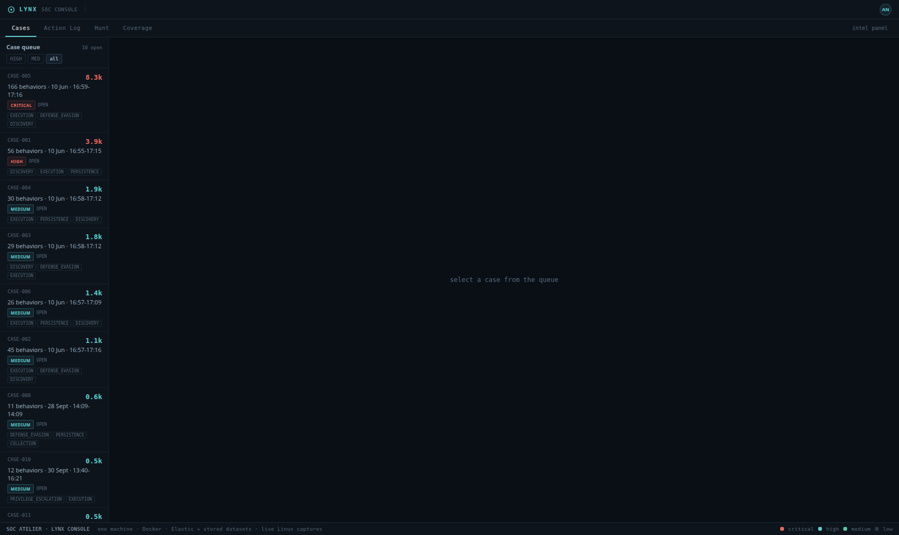

SOCAtelier
The core lab. Elastic, osTicket and a self-built triage console (FastAPI + React + D3) in Docker; Suricata on the gateway. Atomic Red Team runs validated the rules; four Linux cases were captured live from the lab host itself.
repository →